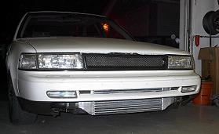

-
I was haveing some compression loss issues in my number 2 cylinder. i didnt think it was just worn out rings. Turns out i was right.. a little more than worn out rings. This was in and running like it is for at least 20k miles. As you can tell by all the carbon buildup under where the crack was. I had the head off 15k miles ago and i could tell there was somthing funny about that cylinder. The upper ring was not rubbing right up top of the cylinder wall. As it looked tho, i still pulled a 12.9 at 110 out of her. Now ive got a new 80k mile engine in. Man, what a difference. Soo much nicer.
12.88 @ 114 mph.. in a 91 maxima at 14 psi -
haha, that is cool you got everything fixed
Terrible idea putting those wheels on… -
Damn! your rings came out in pieces like that? Or you broke them after pulling it out?85 Z31 6.0 LSX turbo 766whp/792wtq
04 GTO, LS6, big cam, porting, N20… underway for summertime daily driver. -
All that stuff was jammed real neatly in the side of the piston.. untill i pulled one part out.. then it all fell out losely. It was all broken already
12.88 @ 114 mph.. in a 91 maxima at 14 psi -
it wasnt making any funny noises? -
Yowzer. Nothing like broken internals to make a man cringe. It's amazing it held itself in one peice as long as it did. These engines are great…My beloved Z:1987 2+2 NA2T w/30a swap.
My black sheep: 88ss parts car (pretty much stripped and gone)
207k miles and counting. Turbo'd since 155k. -
My first turboed engine that I killed road racing did that when a WG hose popped off and I had 18psi of power for about 2 seconds… 3 of the pistons came out and the rings/piston pieces just fell off.SATAN wrote: Damn! your rings came out in pieces like that? Or you broke them after pulling it out?1985 NA2T(now RB) * 1988 SS x2 * 1984 AE x3 * 2006 350Z

-
[quote]OK85ZX wrote:Oh come on, You know it was longer than two seconds. You were probably driving like that for a while and just didnt have the time to look down at the gauge every 3 seconds to see where you were at. Understandable mistake.Originally posted by SATAN85 Z31 6.0 LSX turbo 766whp/792wtq
04 GTO, LS6, big cam, porting, N20… underway for summertime daily driver. -
Yep.Az4u2c wrote: . These engines are great…
I made a couple 50 mile trips with a couple of melted pistons.
And a friend drove across states to get home on cracked ring lands and a busted piston.
You can blow them up an they keep on going.imagination is a virtue -
[quote]craZed wrote:yeah, i just figured… o 197k miles, its just tired with some extra blowby, so i kept driving it and driving it. untill the otherday, it blew the dipstick out, and its got a good crank case vent. That triggered me to look into the engine a bit further and i found the problems with cylinder 2 were more than just worn out engine. somethin was definatly broke. But yea, even when i pulled it out.. the engine ran pretty darn nice. it would have driven alot further as long as i hadnt boosted so much. Although it was really starting to dirty oil fast.Originally posted by Az4u2c
12.88 @ 114 mph.. in a 91 maxima at 14 psi -
yup, i have seen some nice damage to vg30 pistons, lands, rings and skirts on perfectly running mtors. these are some of the best motors evar!
Exercising my constitutional right to be awesome
good thing....1.5.2. Podium winning cars do NOT need to be running at the checkered flag

Copyright © 2006–. All rights reserved. Privacy Policy